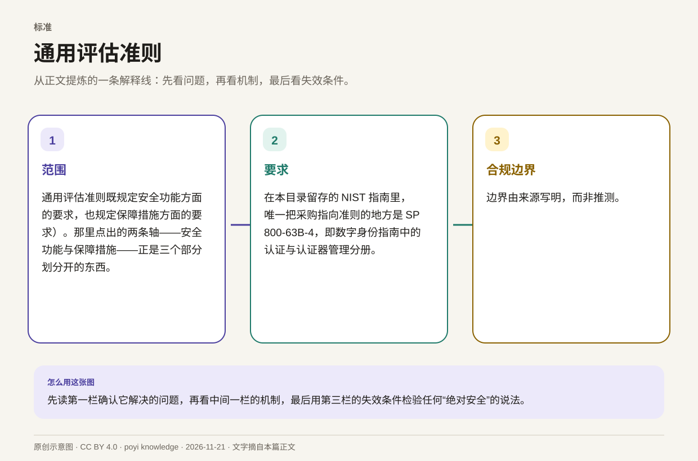
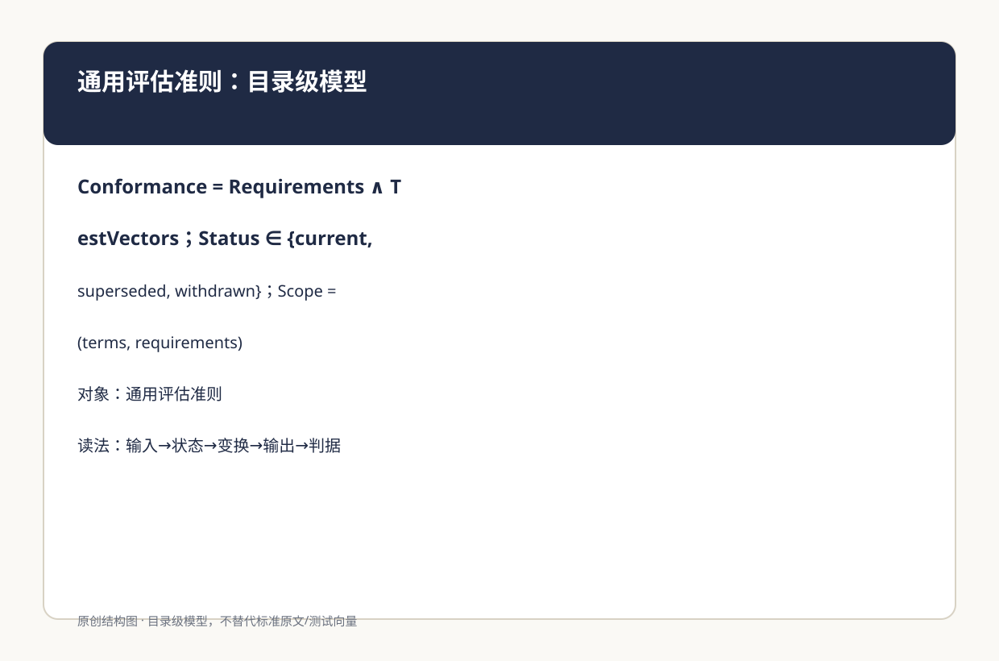

原理与机制
标准：通用评估准则（Common Criteria）。RFC 4949 在通用评估准则这一词条下给出了概念的定义形状（rfc4949.txt:3850）：「A standard for evaluating information technology (IT) products and systems.It states requirements for security functions and for assurance measures.」（一项用于评估信息技术（IT）产品与系统的标准。它既规定安全功能方面的要求，也规定保障措施方面的要求）。那里点出的两条轴——安全功能与保障措施——正是三个部分划分开的东西。第 1 部分被描述为定义 IT 安全评估的一般概念与原则（3890-3895），第 2 部分被描述为收录功能要求陈述的目录（3897-3900）；此处只引用第 3 部分那段，因为本文件里较长的语句都会跨过 72 列换行、把续行缩进带进引号：「Part 3, Security Assurance Requirements, contains a catalog of assurance components for use as a standard way of expressing such requirements for IT products and systems, and defines evaluation criteria for protection profiles and security targets.」（第 3 部分：安全保障要求，收录保障部件的目录，用作表达这类要求的标准方式，并为保护轮廓与安全目标定义评估准则）（3902-3905）。这套机制搬动的对象都被定义为术: 「An information technology product or system that is the subject of a security evaluation, together with the product's associated administrator and user documentation.」（作为一次安全评估对象的信息技术产品或系统，连同该产品附带的管理员文档与用户文档）（16833-16835）。关于它的声明，要不由消费者写在保护轮廓里（13267-13280），要不由厂商写在安全目标里（15424-15437）。置信度标尺是评估保障级：「The Common Criteria defines a scale of seven, hierarchically ordered EALs for rating a TOE.」（通用评估准则定义了一把由七个层级构成、按层次排序、用于给受评对象打分的 EAL 标尺）（6895-6897），最低一级是 「EAL1.Functionally tested.」（EAL1：功能测试）（6904），最高一级是形式化验证设计并测试（6898）。也要说明这条原理性断言不是什么：本目录的留存件里没有 ISO/IEC 15408 标准文本本身，因此这里不引用准则自身的要求编号，上述结构是词汇表对它的描述。

为什么重要
为什么要这样一套评估标准，取决于评估能对部件确立什么、不能确立什么。SP 800-53A 第 5 版把被判断的东西说清楚：「The security or privacy strength of a system component (i.e., hardware, software, or firmware) is determined by the degree to which the security or privacy functionality implemented within that component is correct, complete, resistant to direct attacks (strength of mechanism), and resistant to bypass or tampering.」（系统部件（硬件、软件或固件）的安全或隐私强度，取决于该部件内实现的安全或隐私功能在多大程度上正确、完备、能抵抗直接攻击（机制强度），并能抵抗绕过与篡改）（sp800-53a_r5.txt:496）。这句正是 RFC 4949 所说那种划分的理由——正确、完备、抗直接攻击、抗绕过，讲的是已实现功能顶不顶得住，与该要求哪些功能是两个问题。同一脚注接着点名回答部件这一问题的场合：「Common Criteria Testing Laboratories test and evaluate information technology products using [ISO 15408].」（通用评估准则测试实验室使用 [ISO 15408] 测试并评估信息技术产品）（497），与承担云服务和密码模块测试的实验室并列。留存件显示的第三种设计动因是复用：评估可以从 「Obtaining previous assessment results that may be appropriately reused for the current assessment」（获取可恰当地用于本次评估的以往评估结果）（例中列出 [ISO 15408] 评估）（976）起步——以往评估结果被列为正当的输入，而其前提是结果针对一份可复用、与实现无关的要求陈述写成。该标准的自我描述也可见于本文献引用的目录条目：「Evaluation criteria for IT security」（IT 安全评估准则）「Part 1: Introduction and general model.」（第 1 部分：引言与一般模型）（47002）——ISO 标题内部由破折号分隔，而本抽取件把这些分隔符印成乱码，故只引用其间字形完好的 ASCII 片段。
应用与实例
在本目录留存的 NIST 指南里，唯一把采购指向准则的地方是 SP 800-63B-4，即数字身份指南中的认证与认证器管理分册，位置在一段谈不得导出机密密钥的硬件认证器的要求（sp800-63b.txt:2288-2290）。它这样给出建议：「Organizations SHOULD employ authenticators that have undergone independent security testing」（组织 SHOULD 采用经过独立安全测试的认证器），随后列出两条可接受的路径：「such as authenticators validated to [FIPS140] security level 2 overall with level 3 physical security6 or evaluated against relevant Common Criteria Protection Profiles.」（例如验证到 [FIPS140] 整体安全等级 2、物理安全等级 3 的认证器，或对照相关通用评估准则保护轮廓评估过的认证器）（2291-2294）。这句里有两点要读准。第一，它是 SHOULD，是关于优先采购哪种认证器的指示，而不是产品必须持有证书的规则。第二，它指向的是保护轮廓而不是某个 EAL：点名的工具是轮廓，即 RFC 4949 在 rfc4949.txt:13267-13280 定义、并在 13282-13285 称作消费者一方文档的那份与实现无关、面向一类产品的要求陈述。另要注意，留存件把脚注序号直接粘在词上，印作 physical security6；引文照排印原样保留、未作清理。更外围的机制在该条目只作描述、不作断言：RFC 4949 把商业化许可评估机构定义为经正式批准、可在通用评估准则下评估产品的组织（rfc4949.txt:3833-3835），并记载 NIAP 制定保护轮廓与测试集、推动国际互认（10983-10998）；这些是行号指针，该条目的引文只属于它自己的来源。

边界与攻击面
边界由来源写明，而非推测。范围那句是正面的：「The standard addresses data confidentiality, data integrity, and availability and may apply to other aspects of security.」（该标准涉及数据机密性、数据完整性与可用性，也可适用于安全的其他方面）（rfc4949.txt:3877-3878）。随后列出排除项，最后一条是本密码目录应当注意的：「It does not apply to (a) administrative security not related directly to technical security, (b) technical physical aspects of security such as electromagnetic emanation control, (c) evaluation methodology or administrative and legal framework under which the criteria may be applied, (d) procedures for use of evaluation results, or (e) assessment of inherent qualities of cryptographic algorithms.」（它不适用于：(a) 与技术安全无直接关系的管理安全；(b) 安全的纯技术物理方面，例如电磁辐射控制；(c) 应用这些准则所依凭的评估方法或行政与法律框架；(d) 评估结果的使用程序；(e) 对密码算法固有品质的评估）（3882-3888）。因此在准则下被评估的产品，其被评估的是已实现机制的正确、完备与抗攻击性，算法本身的评估被明确留在标准职责之外——这正是本行不声称任何密码经某个 EAL 审查的原因。其二，这把标尺在不同准则族之间不能干净地平移：关于 EAL 与旧 TCSEC 等级的等价，词汇表说 「However, this equivalency should be used with caution.The levels do not derive assurance in the same manner, and exact mappings do not exist.」（然而这种等价应当谨慎使用；各级推导保障的方式并不相同，也不存在确切的映射）（6918-6920）。其三，基准线是厂商自己的文档：「Common Criteria philosophy, it is important that a TOE be evaluated against the specific set of criteria expressed in the target.」（在通用评估准则的思路里，重要的是按目标中所表述的那一套具体准则来评估受评对象）（16841-16843），而目标本身也要被检查是否正确、完备、内部一致（16846-16848）——一次评估证明的是与所声明目标相符，而弱目标的空间恰恰就在这条边界上。以上都不是准则被攻破的说法：留存件没有描述任何对被评估产品的攻击，本文也不作这种主张。它们确实写出的是 1993 年整合先前准则的动因（3856-3860），那是历史；以及上述排除项，那是边界。
历史与背景
留存件给出的年代很少而具体。「Canada, France, Germany, the Netherlands, the United Kingdom, and the United States (NIST and NSA) began developing this standard in 1993, based on the European ITSEC, the Canadian Trusted Computer Product Evaluation Criteria (CTCPEC)」（加拿大、法国、德国、荷兰、英国与美国（NIST 与 NSA）自 1993 年开始制定这一标准，其基础是欧洲的 ITSEC、加拿大的可信计算机产品评估准则（CTCPEC），以及美国的相关准则）（rfc4949.txt:3856-3860）：五个欧洲方面加上经由 NIST 与 NSA 的美国，起点是 1993 年，基座是 ITSEC、CTCPEC 与美国联邦准则，其前身是 TCSEC——引文停在联邦准则标题之前，因为词汇表把该标题围在它自己的引号里，若引用就会把引号字符放进一段引文之内。制定工作是与 「ISO/IEC Joint Technical Committee 1 (Information Technology),」（ISO/IEC 第一联合技术委员会（信息技术））（3862）合作进行的，其第 27 小组委员会第 3 工作组在第 3871 行具名。走向 ISO 的一步是 「Version 2.0 of the Criteria has been issued as ISO's International Standard 15408.」（该准则的第 2.0 版已作为 ISO 的国际标准 15408 发布）（3872-3873），随之而来的意图是 「The U.S.Government intends this standard to supersede both the TCSEC and FIPS PUB 140.」（美国政府打算让这一标准同时取代 TCSEC 与 FIPS PUB 140）（3873-3874）。前身准则自己的词条用三个词记下同一次结局——ITSEC 词条以 「Superseded by the Common Criteria.」（已被通用评估准则取代） 收尾（8564）。词汇表所引版本的年代记在参考文献里：[CCIB] 条目写明 Common Criteria Implementation Board、第 1 部分引言与一般模型、version 2.0、CCIB-98-026，以及 「May 1998.」（1998 年 5 月）（19283-19286）。来源自身的年代也该记入：RFC 4949 在第 7-8 行印着 Request for Comments: 4949 与 August 2007，因此它所述的通用评估准则是 1990 年代中期到 2007 年的图景，而不是当下的图景。更晚的版本在这份留存件里只余一个指针：SP 800-53A 第 5 版引用的 ISO 目录条目为 Part 1: Introduction and general model.，署 2009 年（sp800-53a_r5.txt:47002），此处按行号引用，因为该条目的来源是这份 RFC。另有两件留存件未给、该条目刻意不谈的东西：NIAP 那一条（rfc4949.txt:10997-10998）之外的任何承认体系或互认签署方清单，以及关于有多少产品被评估过的任何说法。
逐步示例与核验
形式模型与复算步骤
[S=\min_i S_i,\quad S_i\in{\text{密钥强度},\text{分组安全},\text{实现安全}}]
通用评估准则的公开参数、密钥/随机数与消息；变量说明：S 为综合安全强度；各分量取最小值，不能只看密钥位数。1.读取标准规定的密钥/分组/模式参数。2.按标准表换算等效强度。3.取最弱分量作为系统强度。边界：公式只覆盖已登记的参数与假设；参数取值、标准版本和实现细节仍以来源为准。
参考出处
- Wikipedia search entry for 通用评估准则. https://zh.wikipedia.org/w/index.php?search=%E9%80%9A%E7%94%A8%E8%AF%84%E4%BC%B0%E5%87%86%E5%88%99
- Handbook of Applied Cryptography (Menezes, van Oorschot, Vanstone). https://www.cacr.math.uwaterloo.ca/hac/